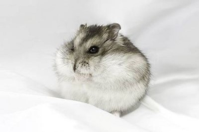

햄스터 종 소개
시리아 햄스터(골든햄스터)
- 중동, 시리아지역에서 처음발견되어 시리아햄스터라고 불리게되었다.
- 털이 짧으면 팬시 털이길면 테디베어라고 부른다
- 몸길이는 보통 12.5에서 17.5 센티미터이며, 몸무게는 보통 120g에서 170g 정도이다.
- 수명은 2년에서 3년 정도이다.
드워프 햄스터
시리아 햄스터에비해 상대적으로 몸집이 작은햄스터들을 일괄적으로 부름 난쟁이 햄스터라고도 불린다
난쟁이 햄스터의 크기는 몸집이 아주 작을 때는, 7cm~9cm 이고, 많이 클때는 10cm~12cm 정도 된다.
드워프 햄스터 종류

윈터 화이트 (정글리안)
- 1773년 중국의 북서부인 신강성 남부 알타이산맥의 지류인 준가얼분지에서 팔라스에의해 최초로 발견
- 공 모양의 동그란 몸을가지고있으며 시리아 햄스터의 절반크기
- 캠벨 러시안햄스터와 비슷하게 생겼지만 겨울이되면 털이 하얗게 변한다
- 캠벨에 비해 성질이 온순하고 사람을 잘 따른다
캠벨 러시안
- 1905년 중국 북부지방인 내몽고에서 토마스 캠벨에 의해최초발견
- 1970년부터 애완동물로 사육되어 널리알려짐
- 수컷이 암컷보다 몸집이 큰 편이다
- 윈터화이트 러시안과 비슷하게 생겼지만 유전자가 다르다
로보로보스키
- 드워프햄스터중에 가장 작은종
- 중국 북서부지역의 고비사막과 몽골주변에 서식
- 눈 위에 흰털이 사슴을 닮았다고하여 사슴햄스터라고도 불린다
- 사람을 잘 물지는 않지만 예민하고 겁이많으며 움직임도 빨라 주의가 필요하다
- 한케이지에서 여러마리 사육이 가능하지만 영역다툼을 할 수있어 따로 분리해서 기르는것이 좋다
차이니즈
- 날씬한 체형에 꼬리가 2~3cm로 다른햄스터에비해 길다
- 손에올리면 긴 꼬리를 손에감는특징이있다
- 회색으로 빛나는 갈색 털을 가지고있으며 등을따라 어두운 줄무늬가 있다
- 암컷은 공격성이 강해 기르기힘들고 번식과 사육이 까다로워 우리나라에는 보급되지않은 종이다